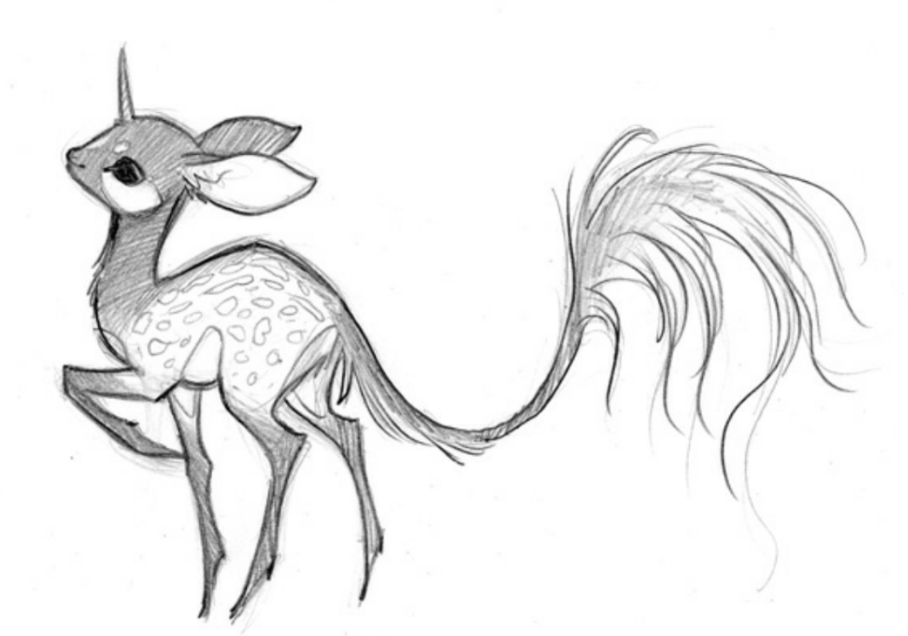

extras
first adobe illustrator test
second adobe illustrator test

edited mark zuckerberg on photoshop

inspiration used in "the sisee", artist unknown
the first three are lab tests to work out basics of adobe apps. the last one of the doodle is inspiration used for the sisee photo manipulation project!